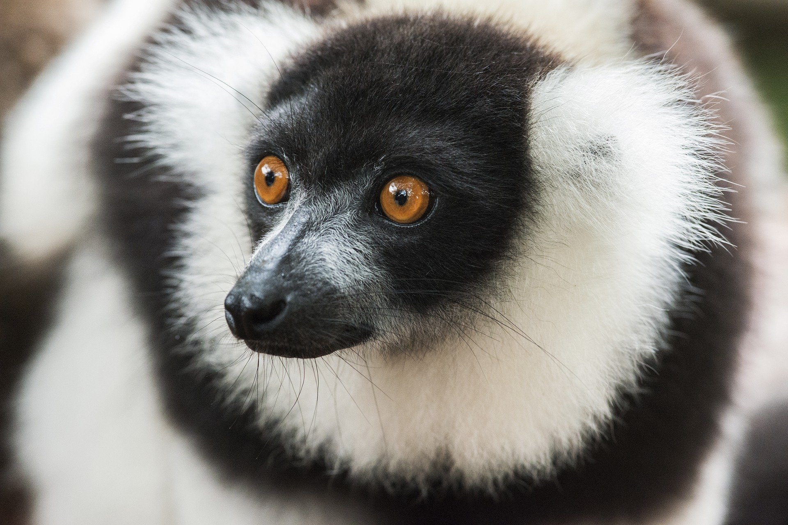

<!DOCTYPE html>
<html lang="ko">
  <head>
    <meta charset="UTF-8" />
    <meta http-equiv="X-UA-Compatible" content="IE=edge" />
    <meta name="viewport" content="width=device-width, initial-scale=1.0" />
    <title>이미지 슬라이드</title>
    <style>
      section {
        width: 500px;
        margin: 30px auto;
      }

      div.images img {
        width: 500px;
        height: 500px;
      }
      /*

*/
      div.mask {
        width: 500px;
        height: 500px;
        overflow: hidden;
      }
      article.nav {
        position: absolute;
        left: 30px;
      }
    </style>
    <script>
      document.addEventListener("DOMContentLoaded", () => {
        const IMAGE_WIDTH = 500;
        let position = 0;
        const prev = () => {
          // 이미지(mask box)의 width만큼 position값을 감소시키기
          position += IMAGE_WIDTH * -1;

          /*
            margin-left를 - 로 설정하여 이미지 왼쪽으로 이동
            margint-left는 JS는 camel case 로 사용하고
            중간의 -를 제거하고 - 다음 글자를 대문자로
            
          
          image.style.marginLeft = position + "px";

          margint-left를 이동하는 것보다 CSS3에서는 transform을 사용하자
          
          image.style.transform = "transformX(" + postiion + "px)";
          js 에서는 문자열 + 문자열 ... 등의 연산 대신에 Backtit을 사용하여 문자열 완성을 수행한다.
          */
          image.style.transform = `transformX(${position}px)`;
        };

        document.querySelector("nav").addEventListener("click", (e) => {});
      });
      
  </head>
  <body>
    <section>
      <div class="mask">
        <div class="images">
          

          
          
          
          
        </div>
      </div>
    </section>
  </body>
</html>
